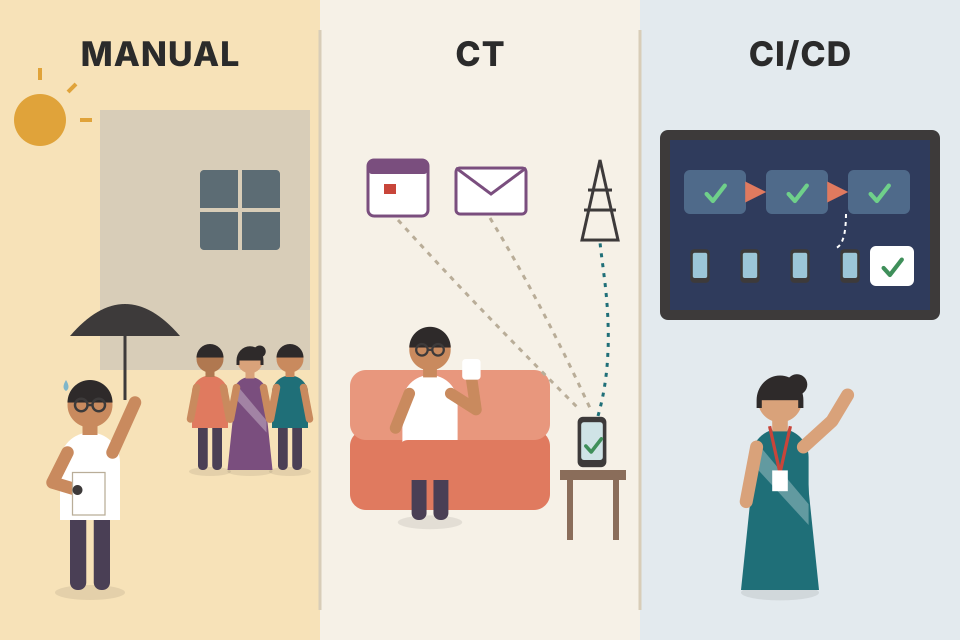
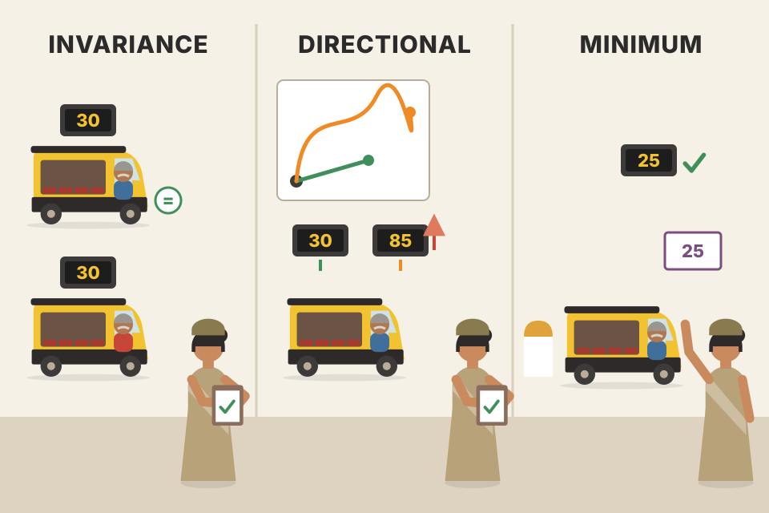
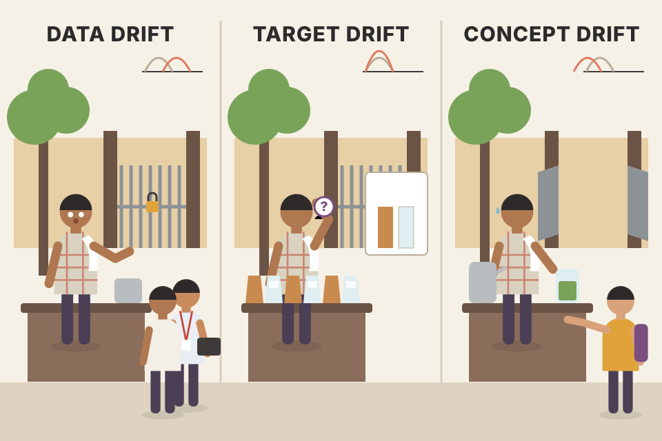
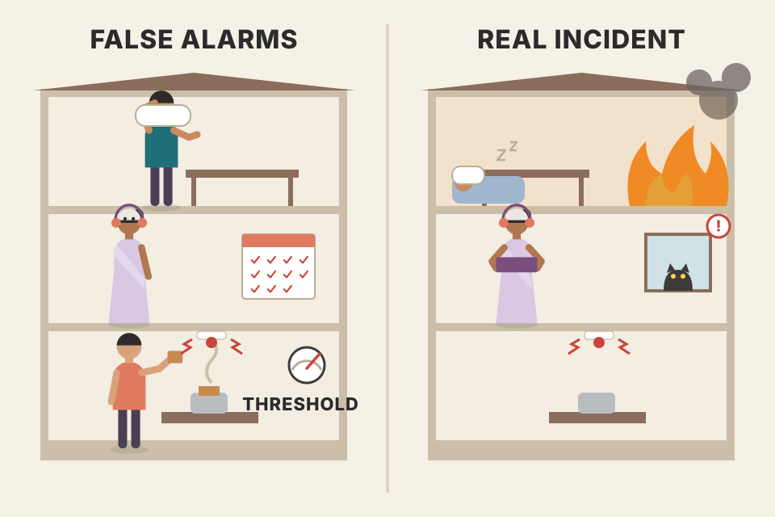

A strong model is not enough: you have to run the whole ML life cycle reliably. The appendix boils MLOps (machine learning operations) down to six tool-independent principles. Automation moves you from hand-run notebooks to continuous training (CT) and CI/CD. Versioning tracks code, models and data separately, because a change in any of the three changes the system. Experiment tracking lets you compare many training runs and pick a winner. Testing covers code, data and models, from unit tests to behavioural tests. Monitoring watches logs, system and model metrics and three kinds of drift, then raises alerts that may trigger retraining. Reproducibility makes every step give the same result for the same input, by tracking inputs and fixing random seeds.
The appendix is a checklist, but the six principles form a chain: each one solves a problem the previous one exposes. Orange boxes are the key ideas.
The appendix starts from a simple claim: building a robust and scalable ML system takes much more than a powerful model. You need an approach that covers the whole ML life cycle (data, training, deployment, monitoring, retraining) and makes it run reliably. That is what MLOps (machine learning operations: DevOps-style practices applied to ML) is about. In MLOps language this is called operationalizing the life cycle: turning one-off work into a repeatable, run-every-day process.
The authors list six core principles that guide the field:
Three properties of these principles matter:
The appendix starts with the foundation: automation.
Each line is a production incident (modelled scenarios, not from the book). Pick one to see which principle would have prevented it.
Running a restaurant kitchen, not cooking one good meal. One great dish (a strong model) wins a cooking contest. A restaurant needs standard recipes (versioning), a prep routine that runs every morning (automation), tasting notes from trials (experiment tracking), food-safety checks (testing), someone watching which dishes come back half-eaten (monitoring), and a recipe exact enough that any cook gets the same dal (reproducibility). Where it breaks: a recipe gives the same dal every time; an ML model trained twice may differ unless you control randomness (plate 21).
A traditional program is fixed once written. An ML system depends on three moving inputs: code, data and the model learned from them. Any of the three can change, and the data in production keeps changing on its own. The six principles are the minimum set of habits that keep those moving parts under control: automate the changes, record them, compare them, check them, watch them, and be able to replay them.
"What is MLOps to you?" Answer: "The practices that let an ML system run reliably after the notebook: automate training and deployment, version code, data and models, track experiments, test code, data and models, monitor for degradation and drift, and keep every run reproducible. It's tool-agnostic; tools like ZenML or MLflow just implement it."
Teams adopting MLOps usually climb three tiers, one after another, from manual work to full automation:
The most common CT triggers:
Having several trigger types gives you flexibility to adapt to different situations.
A support-ticket classifier (modelled). Tier 1: every month a data scientist exports tickets, cleans them in a notebook, retrains and emails a model file to the backend team. Tier 2: ZenML runs the same steps every night, and also whenever 5,000 new labelled tickets arrive or monitoring reports accuracy below a threshold; validation steps stop a bad dataset. Tier 3: when someone changes the cleaning code, a push to the repo builds a new container, runs the tests and deploys the new pipeline to staging, then production.

Paying the electricity bill. Tier 1: you stand in the queue at the office each month. Tier 2: UPI AutoPay pays it on a date or when the bill arrives (schedule or event trigger). Tier 3: when the bank changes its app, its own pipeline tests and rolls out the new version without breaking AutoPay. Where it breaks: AutoPay runs the same action each time; CT produces a new model each time, which still needs testing before it is trusted.
CT and CI/CD automate different things. CT automates running the pipelines (new data → new model). CI/CD automates changing the pipelines (new code → new pipeline version). A mature system needs both, because models go stale from data changes and pipelines change from code improvements.
"What's the difference between CT and CI/CD in ML?" Answer: "CT retrains the model automatically when a trigger fires, like a schedule, new data or a performance drop. CI/CD builds, tests and deploys new versions of the code, including the training pipeline itself, into staging and production. CT changes the model; CI/CD changes the software that makes and serves it."
Because the LLM system is built on the FTI architecture (separate feature, training and inference pipelines), moving from a manual process to CI/CD/CT is quick. Figure A.1 in the book shows how, in two halves:
The one-line takeaway: CT automates the FTI pipelines, while CI/CD builds, tests and pushes new versions of the FTI pipeline code to production.
The appendix's figures are not in this page's figure folder, so here is our own redraw of Figure A.1 (book, pdf p491). Step through it.
How to read the book's figure. A green horizontal bar (the shared storage) splits it. Above it are rounded "event" boxes (New Data, Performance Drop) feeding Trigger Pipelines, the three numbered FTI pipelines, and the Monitoring Pipeline fed by Predictions and by Features & Predictions. Small labels on the vertical arrows say what crosses the bar: Features & Labels down from #1 and up into #2, Models down from #2, Features and Models up into #3. Below the bar sit the Feature Store and Model Registry drums, the Code Repository drum, and the manual chain Data Analysis → DS Experiments → Model Analysis, plus Trigger CI/CD → "Build, Test, Package, and Deploy the FTI Pipelines".
A newspaper. Every night the presses run automatically with the day's stories (CT: same pipeline, new data). When the editors redesign the layout, the new template is proof-checked and installed on the presses (CI/CD: new pipeline code). A sudden drop in sales (monitoring) can trigger a special edition. Where it breaks: a newspaper doesn't learn from yesterday's issue; the training pipeline does, so each night's "edition" is a new model that must be checked.
FTI makes this easy because each pipeline has a fixed interface (feature store in, model registry out). CI/CD can replace one pipeline's code without touching the others, and CT can rerun any pipeline when its inputs change. The monitoring loop turns production behaviour into a training trigger, which is what keeps the model fresh.
"Draw the MLOps loop for a RAG or fine-tuned LLM service." Sketch two loops: an automated one (new data or a quality drop → feature pipeline → training → registry → inference → monitoring → trigger) and a human one (experiments → push code → CI/CD builds, tests and deploys the pipelines). Mention a human approval gate before a new model goes live.
The whole ML system changes if the code, the model or the data changes. So each of the three must be tracked and versioned on its own. The appendix gives one strategy per element:
9f3c2a1). Releases follow a readable convention of major.minor.patch: in v1.2.3, 1 is the major, 2 the minor and 3 the patch version.Versioning data is less straightforward, because it depends on whether the data is structured or unstructured and whether it is big or small. Options the book names:
Whatever the solution, the data itself must live somewhere: on-premises or in cloud object storage such as AWS S3. The tools add the ability to structure datasets and versions, track them and access them.
Pick a change to a model in the registry, starting from v1.2.3. The rules follow common SemVer practice (Beyond the book: the appendix names SemVer but does not list ML-specific bump rules; this mapping is ours).
The LLM Twin (modelled). Code: commit a41f9e2 inside release v0.4.0 of the repo on GitHub. Data: instruct-dataset artifact version 7 in ZenML, files on S3. Model: twin-llm 1.3.0 in the registry, metadata "trained on instruct-dataset v7, Llama 3.1 8B base, eval score 0.81, p95 latency 900 ms". If quality drops, you can say exactly which of the three changed since 1.2.0.
A railway timetable. The printed timetable has an edition number (release), each correction slip is a small change (commit), the rakes (trains) have their own numbers and maintenance logs (model registry with metadata), and the passenger counts the planners used are kept per year (data versions). Where it breaks: passenger data is small; ML datasets can be terabytes, which is why the book says data versioning depends on scale and often uses artifacts over object storage instead of copying everything.
A model is a function of (code, data, configuration). If you only version one of them, you can't explain or rebuild the model. Separate versions plus metadata links (model → data version → code commit) give lineage: you can roll back any one of them, compare two models fairly, or reproduce one (plate 21).
"How do you version data for ML?" Answer: "It depends on type and scale. For tabular data, a version column or snapshot tables; for files, DVC or artifact tracking in tools like ZenML, W&B or Comet, with the bytes in S3. Models go in a registry with SemVer and metadata linking them to the exact dataset version and code commit." For a RAG system, add the embedding model version and the index snapshot.
Training ML models is iterative and experimental. Unlike traditional software development, you run many experiments in parallel, compare them on a set of predefined metrics, and decide which one moves on to production.
An experiment tracking tool logs everything you need to compare runs: metrics, and visual representations of the model's predictions (plots, sample outputs), so you can easily pick the best model. Popular tools: Comet ML, W&B, MLflow and Neptune.
Five fine-tuning runs (all numbers modelled). Choose the metric that matters for your product and see which run wins. A tracker makes this a sort, not an archaeology dig through notebooks.
A cricket selector's notebook. Each net session is an experiment: who bowled, pitch, overs, wickets, economy. At selection time, the selector sorts by what the match needs (economy for T20, wickets for a Test). Where it breaks: a selector can watch players live; a model run that wasn't logged is gone, so the tracker must capture everything at run time.
Each run is logged with its config (hyperparameters, dataset version, code version) and its outputs (metrics over time, sample predictions, system stats). Comparison only makes sense when runs share the same evaluation; the tracker keeps those side by side and links the winner to the model registry entry.
"How did you choose between model variants?" Answer: "Every run was logged to a tracker with config, dataset version and metrics. I compared them on an agreed eval set and also on latency and cost, picked the candidate, and promoted it to the registry with that metadata." For LLMs, add sample generations and LLM-judge scores.
Testing follows the same pattern as versioning: an ML system must be tested across three dimensions, the data, the model and the code. You must also check that the feature, training and inference pipelines are well integrated with external services, such as the feature store, and work together as a system. In Python, the most common tool for writing tests is pytest, which the authors recommend.
During development, six main types of tests are used at different stages:
| Type | What it checks | Example from the book |
|---|---|---|
| Unit | One component with a single responsibility. | A function that adds two tensors, or one that finds an element in a list. |
| Integration | How integrated components or units interact. | The data evaluation pipeline or feature engineering pipeline, and how they connect to the data warehouse and feature store. |
| System | The entire integrated application, end to end, including performance, security and user experience. | A whole ML pipeline from data ingestion through training to inference, checking correct outputs for given inputs. |
| Acceptance | Often called UAT (user acceptance testing): the system meets the specified requirements and is ready to deploy. | – |
| Regression | Previously found errors don't come back after new changes. | – |
| Stress | Performance and stability under extreme conditions (high load, limited resources): find breaking points, survive spikes and adverse situations. | – |
Figure A.2 (book, pdf p494), "Test types", draws these as a pyramid: a wide base of five unit tests, three integration tests above them, two system tests above those, and at the top acceptance and stress tests side by side. Regression tests are left out on purpose: they are not a separate phase. Regression testing is applied at every level (unit, integration, system, acceptance, stress) as an ongoing process to make sure changes don't reintroduce old errors.
Our redraw of Figure A.2. Click a block for what it tests in an LLM/RAG system (the LLM examples are ours). The dashed frame is regression testing, which wraps every level; click "regression" to light it.
Building a house. Unit tests check each brick; integration tests check that a wall's bricks, mortar and window frame hold together; system tests check the whole house (water, wiring, doors); acceptance is the owner's walk-through against the plan; stress testing is the monsoon. Regression is re-checking the old leak spot after every repair. Where it breaks: a house doesn't change once built; ML pipelines change weekly, so the whole pyramid must rerun automatically in CI.
Lower levels are many, fast and cheap, and pin a failure to one function. Higher levels are few, slow and expensive, but catch problems that only appear when parts are wired together or under load. The pyramid shape is a cost trade-off: lots of cheap checks, a few expensive ones.
"How would you test a RAG pipeline?" Answer by level: "Unit tests for cleaning, chunking and prompt formatting; integration tests that the ingestion job writes to the vector DB and retrieval reads it back; a system test from a document to a generated answer; stress tests on the API under peak load; and a regression suite of past bad queries that must stay fixed."
Most tests treat a component as a black box: you control only the input and check the output. The goal is to confirm you get the expected output for a given input. Things you usually test:
For code you can reuse the standards of classic software engineering. Two unit-test ideas from the book for an LLM data pipeline:
A sketch of both in pytest (our own function names, not the book's code):
def test_clean_removes_noise():
raw = "Hello 🚀 <b>world</b>!! "
assert clean_text(raw) == "Hello world!" # emoji, tags, extra spaces gone
@pytest.mark.parametrize("size", [16, 64, 256])
def test_chunks_respect_size(size):
text = "word " * 500
chunks = chunk_text(text, max_words=size)
assert all(len(c.split()) <= size for c in chunks) # output rule
assert " ".join(chunks).split() == text.split() # nothing lost
def test_chunk_empty_input():
assert chunk_text("", max_words=64) == [] # edge caseHow to read it: the first test fixes one input and its exact expected output. The second is parametrized: pytest runs it once per chunk size, checking an output rule (no chunk too big) and an invariant (no words lost). The third covers an edge case on the input side.
A toy chunker (splits on words). Type a sentence and a max chunk size; the checks below run the same black-box assertions as the pytest sketch.
Checking a pressure cooker at the shop: you don't open the valve mechanism, you check that it whistles at the right pressure (output) for a given amount of water and heat (input), including the edge case of an empty cooker. Where it breaks: black-box tests can't tell you why it failed; for that you read the code, but the test tells you that it failed, which is what CI needs.
Black-box tests stay valid when you refactor the internals, because they only pin the contract (inputs → outputs). Edge cases are where bugs hide: empty strings, a chunk size of 0, unicode, very long input. Testing intermediary outputs (cleaned text before chunking) localises failures in multi-step pipelines.
"What would you unit-test in an ingestion pipeline?" Answer: "The pure functions: cleaning, chunking, metadata extraction and prompt formatting, with parametrized cases for sizes and edge cases like empty or huge inputs, and assertions on types, formats, exceptions and invariants like 'no text lost'."
Data tests are mainly about data validity. Validity code usually runs when raw data is ingested from the data warehouse or after the features are computed, so it is part of the feature pipeline. By writing integration or system tests for the feature pipeline, you check that the system responds properly to both valid and invalid data.
What you check depends heavily on the application and data type:
Pick a record arriving from the warehouse. The validator runs the book's text checks (the thresholds are ours, modelled). A valid record passes into the feature pipeline; an invalid one is rejected or quarantined.
A ration shop weighing and inspecting grain before it goes on the shelf: wrong weight, stones in the rice, or a damp sack gets set aside. Where it breaks: a shopkeeper inspects every sack by eye; a data pipeline must encode "what good looks like" as explicit rules, and anything you didn't write a rule for slips through.
ML code rarely crashes on bad data: it trains or predicts on it and quietly gets worse. Validity checks turn silent data problems (missing fields, schema changes, encoding errors) into loud failures at the pipeline boundary, which is why they live in the feature pipeline and why monitoring later asks "is the data valid?" before retraining (plate 20).
"How do you guard a RAG index against garbage documents?" Answer: "Validate at ingestion: non-empty, length bounds, UTF-8 decodes cleanly, expected language, ratio of letters to symbols, required metadata present. Reject or quarantine failures and alert on the reject rate, with integration tests that feed known-bad records through the pipeline."
Model tests are the trickiest, because training is the most non-deterministic process in an ML system. Worse, unlike traditional software, an ML system can finish without throwing any error and still produce wrong results, which you only see in evaluations or tests.
Standard model test techniques check:
When they run: all tests are triggered in the CI pipeline. Costly tests, like model tests, can run only under special conditions, for example only when the model code changes.
def test_overfits_tiny_batch():
model, batch = build_model(seed=0), tiny_batch(n=8)
first = train_step(model, batch)
for _ in range(200):
last = train_step(model, batch)
assert last < first # loss goes down
assert last < 0.05 # can memorise 8 examplesHow to read it: if a model can't even memorise 8 examples, something is wired wrong (labels misaligned, gradients not flowing, learning rate zero). The test is cheap because the batch is tiny. (Our sketch; the 0.05 threshold is ours.)
A modelled loss curve on one tiny batch. Introduce a bug and see which check catches it.
Testing a new student by giving them the same 8 multiplication questions again and again. A student who can't learn even those 8 isn't listening, or the answer key is wrong. Where it breaks: memorising 8 answers proves the student can learn, not that they understand; passing this test says nothing about real accuracy, which needs evaluation.
These tests target the training machinery, not the model's quality. Shape checks catch wiring errors; "loss decreases" and "overfits a small batch" catch broken gradients, labels or optimisers; device tests catch CPU/GPU-only code paths; early stopping and checkpoint tests catch logic that would waste a long training run or lose it.
"How do you test training code?" Answer: "Shape assertions, one-step loss decrease, overfit-a-tiny-batch to near zero loss, run on CPU and GPU, and check early stopping and checkpoint save/resume. They're expensive, so CI runs them only when model code changes; quality is judged separately by evaluation."
At the other end of the spectrum is behavioural testing. It borrows the code-testing strategy: treat the model as a black box and look only at input data and expected outputs. That makes behavioural tests model-agnostic. The key paper, recommended by the authors, is Beyond Accuracy: Behavioral Testing of NLP Models with CheckList (Ribeiro et al., 2020). It proposes three types of tests. The book's running example is a model that extracts the main subject of a sentence:
| Test | Rule | Example (our sentences, same idea as the book's) |
|---|---|---|
| Invariance | Changing the input in an irrelevant way should not change the output. The book's example uses synonym injection. | "Recent advances in AI are reshaping industry." → ai; "Recent progress in AI is reshaping industry." → still ai |
| Directional | Some input changes should change the output, in a known way. | "Transformers for speech recognition." → transformers; "Transformers for image captioning." → still transformers; "CNNs for speech recognition." → cnn |
| Minimum functionality | The simplest input → output pairs the model must always get right. | "LLMOps is the next big wave in machine learning." → llmops; "This is about graph neural networks." → gnn |
Note on the directional example: changing only the task ("speech" → "images") correctly leaves the subject alone, while changing the subject word changes the output. For more on testing, the book recommends Goku Mohandas's Testing Machine Learning Systems: Code, Data, and Models (Made With ML).
def test_invariance_synonyms():
a = extract_subject("Recent advances in AI are reshaping industry.")
b = extract_subject("Recent progress in AI is reshaping industry.")
assert a == b == "ai"The toy model returns the first known topic word it finds (a keyword lookup, standing in for a real model). Pick a test suite, then toggle a "bug" to see which suite catches it.

Checking a new auto-rickshaw meter. Invariance: the fare shouldn't change if the driver takes the same route in a different shirt. Directional: a longer route must cost more. Minimum functionality: the base fare for the first 1.5 km must always be right. Where it breaks: the meter follows a formula you can read; a model doesn't, which is exactly why you probe it from outside with cases like these.
Accuracy on a test set averages over everything and hides specific failures. Behavioural tests target capabilities one by one with templated cases, so a failure points at a behaviour ("doesn't handle synonyms") instead of a number going down. Because they only need inputs and outputs, the same suite works for any model you swap in.
"How would you regression-test an LLM prompt or model change?" Answer: "A behavioural suite: invariance cases (paraphrases, typos, names swapped shouldn't change the answer), directional cases (adding a negation or a constraint must change it) and minimum-functionality golden cases that must always pass. Run it in CI before shipping any new model or prompt version."
Monitoring is vital for any ML system that reaches production. The reason is a key difference from traditional software:
The right attitude: don't try to avoid these situations; build a strategy to catch and fix the errors in time. Monitoring detects performance degradation and triggers an alarm saying the model should be retrained manually, automatically, or both.
Why retrain? Performance drops because of a drift between the training dataset and what the model receives in production. The only fix is to adapt or retrain the model on a new dataset that captures the new production scenarios.
Training is costly, though, so there are tricks to avoid unnecessary retraining (plate 20). First, what can you monitor to know your system's health? Logs (12), metrics (13) and drifts (14–18).
A Google Maps-style traffic predictor trained before a new flyover opened. Nothing crashes, but its ETAs for that area are now wrong every day. Where it breaks: a human commuter notices the flyover the first morning; the model only "notices" if someone is watching its errors or its inputs.
A model learns P(output | input) from a sample of the world at one point in time. When the world's distribution moves, the learned mapping becomes stale. Since the code is unchanged and runs fine, ordinary error monitoring stays green; you need ML-specific signals: model metrics, and drift as a proxy when labels are slow.
"Why is monitoring different for ML?" Answer: "Normal software fails loudly; ML fails silently, because it's a probabilistic function of training data and production data drifts. So beyond latency and errors I monitor model quality and input/output distributions, and wire alerts to a retraining or review process."
The logging approach is simple: capture everything, for example:
Capturing everything makes log volume grow fast. The book's answer: use the many tools for automated log analysis and anomaly detection, some using AI, to scan all logs efficiently so the volume stays manageable.
{"ts": "2026-11-03T10:02:11Z", "service": "rag-inference", "component": "retriever",
"trace_id": "t-81f2", "event": "end", "config": {"top_k": 3, "embed_model": "v2"},
"query": "how do I reset my plan?", "doc_ids": [412, 97, 13], "latency_ms": 38}How to read it: one structured entry (our example). service/component/trace_id tag its origin; config documents the setup; query and doc_ids are the input and an intermediate output; event marks begin/end/crash.
Tick what the entry contains; the readout scores it against the book's four rules.
A hospital patient file: every reading, every medicine with time and who gave it, tagged by ward and doctor. When something goes wrong, you can trace it. Where it breaks: doctors read files by hand; logs at scale need automated analysis, which is why the book points to anomaly-detection tooling.
Logs are the raw evidence for debugging and for later metrics. Tagging by origin (and a trace ID across components) lets you rebuild one request's path through a multi-step LLM pipeline: retrieval, prompt, generation. Without intermediate outputs you can see that an answer was bad but not which step caused it.
"What do you log in an LLM service?" Answer: "Structured JSON with service, component and trace ID; the config and model version; the query, retrieved chunks, final prompt and answer; start/end/error events with latency and token counts. Then aggregate into metrics and run anomaly detection on top."
To quantify your application's health you define a set of metrics, each measuring a different aspect: the infrastructure, the data and the model.
Based on service-level metrics (latency, throughput, error rates) and infrastructure health (CPU/GPU, memory). Used in both traditional software and ML, they tell you whether the infrastructure works and the system gives users a good experience.
System health alone won't reveal deeper problems in the model. The next layer tracks model performance: quantitative evaluation metrics like accuracy, precision and F1 score, plus business metrics the model influences, like ROI (return on investment) and click rate.
Use windows, not lifetime totals. Cumulative metrics over the whole deployment are often useless. Evaluate over time intervals relevant to your application, such as hourly: window the inputs and compute and aggregate metrics per window. These sliding metrics show the system's health more clearly and catch problems sooner, because old history doesn't hide them.
No labels yet? Often you don't have ground truth for production data, especially when it arrives with a big delay or needs human annotation. Two fixes: build an approximate signal that estimates performance, or label a small part of live data. In ML monitoring, that approximate signal is called a proxy metric, usually implemented with drift detection (next plates).
Hourly accuracy of a deployed classifier (modelled): steady at ~92%, then something breaks at the hour you pick. Compare how fast each metric shows it.
A batsman's career average vs his last 5 innings. A slump barely moves the career average of a 10-year player, but the last-5 figure shows it at once. Where it breaks: a short window is noisy (one bad innings looks like a slump), so window length is a trade-off between speed and false alarms.
A cumulative mean after N hours moves by only (new − mean)/N per hour, so the more history you have, the slower it reacts. A sliding window forgets old data, so its mean tracks the current state. Metrics are layered: system metrics say "is it up and fast", model metrics say "is it right", business metrics say "is it worth it", and proxy metrics stand in when "is it right" can't be measured yet.
"What would you put on the dashboard for an ML service?" Answer: "System: p50/p95 latency, throughput, error rate, GPU/CPU and memory. Model: windowed quality metrics like precision/F1, or for LLMs judge scores and user feedback. Business: conversion or click rate. And drift-based proxy metrics for when labels are delayed."
Drifts are proxy metrics: they help you spot problems with the production model in time, without needing ground truth or labels. Each drift compares a production distribution P with a reference distribution Pref (usually from training). Table A.1 lists three kinds:
| What drifts | Description | Name and formula |
|---|---|---|
| X | Inputs (features) | Data drift: P(X) ≠ Pref(X) |
| y | Outputs (ground truths / labels) | Target drift: P(y) ≠ Pref(y) |
| P(y|X) | The relationship between X and y | Concept drift: P(y|X) ≠ Pref(y|X) |
How to read the notation: P(X) is "how often each kind of input shows up"; P(y|X) is "given this input, how likely each output is", which is what the model learned. (The book's caption for Table A.1 reads "Relationship between data, model, and code changes", which looks like a caption slip; the table itself is about the three drifts.)
Scenarios from a loan-approval model (ours). Pick one to classify it.

A chaiwala who learned his trade near a college. Data drift: the college shuts and office workers come instead (different customers). Target drift: suddenly half his sales are cold coffee (different outputs). Concept drift: the same students now want green tea when they used to want masala chai (same customers, different relationship). Where it breaks: he sees the change in person; a model sees only numbers, so you must measure distributions to notice.
The model approximates P(y|X) using examples drawn from Pref(X). If P(X) moves, the model is asked about regions it saw little of. If P(y) moves, class balance or label set changes. If P(y|X) moves, the learned rule itself is wrong. Data drift can be measured without labels at all, which is why it's the go-to proxy.
"Explain data, target and concept drift." Answer: "Data drift is the input distribution changing, P(X). Target drift is the output or label distribution changing, P(y). Concept drift is the mapping changing, P(y|X): the same input should now get a different answer. Data drift you can catch without labels; concept drift usually needs labels or a proxy."
Data drift, also called feature drift or covariate shift, happens when the distribution of production data moves away from the training data. The model can't handle the changed feature space, so predictions can become unreliable.
Causes: natural real-life changes, or systemic problems such as missing data, pipeline errors and schema changes.
Figure A.3 (book, pdf p499), "Data drift examples", subtitled "data drift can occur in either continuous or categorical features", has two panels, each comparing a reference (blue) and production (yellow) histogram. Left, a continuous feature: the reference bell is centred around 6, the production bell around 10–11; they overlap only a little (brown). Right, a categorical feature with categories small/large/medium: reference has roughly 290 small, 160 large, 50 medium; production has roughly 260 small, 100 large, 140 medium, so "medium" grew a lot and "large" shrank.
Timing: when data starts to drift, the model's performance may not drop right away, especially if the model interpolates well. That is the ideal moment to consider retraining before the drift hurts performance.
Our redraw of Figure A.3's left panel, with modelled data. Drag the production mean and spread; the overlap shows how much of production still looks like training.
A size-recommendation model for an online kurta store, trained on customers from one city. The store launches nationally and the height distribution of shoppers shifts. Where it breaks: a tailor would just measure; the model keeps recommending confidently from the old distribution until someone checks.
Models are reliable where they have seen lots of training data. As production mass moves into thinly covered regions (the non-overlapping part), the model extrapolates. If the true rule is smooth there, it may still do fine for a while (interpolation), which is why drift can come before the performance drop: a free early warning.
"Your input monitor fires but accuracy looks fine. What do you do?" Answer: "First check it isn't a pipeline or schema problem. If it's real-world drift, treat it as an early warning: label a sample of the new region, evaluate, and schedule retraining with the new data before accuracy actually drops."
Besides the inputs, the output distribution can shift too: target drift. It can mean a change in the shape of the distribution, or classes being added or removed in categorical tasks.
Retraining helps reduce the damage, but you can often prevent target drift by adapting the head processing steps and the model head (the final output layer) to support the new output schema.
The book's example: a classifier predicts whether an image contains animals or people. Then a picture of buildings arrives. Two options: adapt the model to support an unknown class, or adjust the model's head to add the new class for future predictions.
Production images (modelled counts). Choose how the system handles "buildings".
A sorting machine at a post office trained for "letters" and "parcels". Then courier companies start sending flat padded envelopes. Without a new bin they get forced into the wrong one; with an "other" bin they're at least set aside; with a new bin they're handled properly. Where it breaks: a physical bin is easy to add; a new class needs labelled examples before the extended head can learn it.
A softmax classifier must spread probability over the classes it knows, so a truly new class gets forced into an old one, often with high confidence. Monitoring the predicted-class distribution (and confidence) reveals the shift; changing the schema (unknown class or new head output) is a structural fix that retraining alone can't provide.
"Your intent classifier starts seeing a new kind of request. What do you do?" Answer: "Watch the predicted-label distribution and low-confidence rate to detect it, route it to an 'unknown/fallback' path immediately, then collect and label examples and add the intent to the head in the next training run."
The relationship between inputs and outputs can shift too: concept drift. It makes the model ineffective because the patterns it learned to map inputs to outputs are out of date. It can show up in several ways:
Figure A.4 (book, pdf p500), "Concept drift examples", plots three noisy lines over 160 time steps on a 100–200 scale. Gradual (black) slides steadily from about 200 down to about 120. Abrupt (yellow) hovers around 180–185 and then drops sharply at about step 80 to around 135, drifting down to about 120. Periodic (green) rises and falls in waves between roughly 155 and 190.
The book's example: a model predicting whether a person will buy a particular car, built for the American market. Used in the European market, where people tend to buy smaller cars, the link between the car's size feature and the purchase probability changes. Real concept drift can be much subtler than this.
Note from the book: all these types of drift can happen at the same time, which makes it hard to pinpoint the exact source.
Our redraw of Figure A.4 with modelled noise. Pick a pattern to highlight it.
Predicting auto-rickshaw demand. Gradual: the metro line slowly takes riders away. Abrupt: a fuel price hike changes everyone's behaviour overnight. Periodic: Diwali and wedding season every year. Where it breaks: people know the calendar; a model only handles periodic drift if it was trained on enough past cycles or given season features.
The inputs may look identical (no data drift) while the correct answer changes, so input monitoring alone can miss concept drift. It's usually caught via model metrics once labels arrive, or via proxies such as prediction distribution and user feedback. Gradual drift suits scheduled retraining; abrupt drift needs fast alerts; periodic drift is often better modelled with seasonal features than chased with retraining.
"How is concept drift different from data drift, and how do you catch it?" Answer: "Concept drift changes P(y|X): same input, new correct answer. You can't see it in inputs alone, so you need labels, delayed or sampled, or proxies like feedback and outcome rates. Handle gradual drift with scheduled retraining, sudden drift with alerts, periodic drift with seasonal features."
To detect drift you need two windows:
To measure drift you use hypothesis tests that check whether the distribution changed between the two windows:
| Data | Test | Notes |
|---|---|---|
| One continuous feature | Kolmogorov-Smirnov (KS) test | A univariate (1D) test, so you run it once per feature you monitor. |
| One categorical feature | Chi-squared univariate test | Checks whether event frequencies in production match the reference window. |
| Text as embeddings (how LLMs see text) | Dimensionality reduction, then MMD (maximum mean discrepancy) | A multivariate problem. MMD is a kernel-based method that measures the distance between two distributions via the distance between the means of the embeddings of the two windows. |
The book shows both with the alibi-detect library. In outline (shortened; same calls as the book):
from alibi_detect.cd import KSDrift, MMDDrift
ks = KSDrift(x_ref, p_val=.05) # per-feature KS tests vs the reference window
mmd = MMDDrift(emb_ref, backend="pytorch", p_val=.05) # multivariate test on embeddings
result = mmd.predict(emb_prod) # is the production window drifted?What each part does: the detector is built once from the reference window (x_ref); p_val=.05 is the significance level (below it, "drift"); predict runs the test on a test window. The book's KS example also passes a preprocess_fn and an input_shape (to turn raw text into features of a fixed length first).
The reference window is 200 modelled points from training. Slide how far production has shifted and how big the test window is. The KS statistic D is the biggest vertical gap between the two cumulative curves; the p-value comes from the standard asymptotic formula.
A sweet shop checking if today's laddoos match the standard batch: weigh 100 from today and compare the weight spread with the reference batch. One laddoo that is heavy proves nothing; a whole tray shifted heavier does. Where it breaks: weighing is one number (1D, like KS); judging flavour is many dimensions at once, like text embeddings, where you need a multivariate test such as MMD.
A hypothesis test asks: "if production came from the same distribution as the reference, how surprising is this difference?" The p-value is that surprise; below your threshold you call it drift. Bigger windows detect smaller shifts (more evidence), but also flag tiny, harmless shifts. KS compares cumulative curves of one feature; chi-squared compares category counts; MMD compares whole embedding clouds, which is the right tool for LLM inputs.
"How would you detect drift in user queries to a RAG system?" Answer: "Embed a reference window of past queries and a rolling production window, reduce dimensions, and run an MMD test with alibi-detect; alert when the p-value drops below the threshold. For structured features I'd use KS per numeric feature and chi-squared per categorical one."
Put simply: monitoring tells you that something is wrong; observability lets you find out why.
A car's dashboard warning light is monitoring: "engine problem". The mechanic's diagnostic port, which shows every sensor reading, is observability. Where it breaks: a car's sensors are fixed at the factory; in software you choose what internal state to expose, so observability is a design decision (structured logs, traces, intermediate outputs).
Monitoring works for failure modes you predicted (you chose the metric in advance). Observability covers ones you didn't, because the system emits enough internal detail to ask new questions afterwards. In LLM apps, prompt traces with retrieved context are the observability layer.
"Monitoring vs observability?" Answer: "Monitoring collects and visualises known metrics to detect issues. Observability means the system emits enough data about its internal state, like traces, structured logs and intermediate outputs, that you can diagnose root causes you didn't anticipate."
Once metrics are defined you need to get notified. The most common ways to fire an alarm:
Thresholds and p-values depend on your application, but getting them right matters: you don't want to flood the alerting system with false positives. Then nobody trusts it, and people either overreact or don't react at all.
Channels: Slack, Discord, email and PagerDuty. Stakeholders can be the core engineers, managers, or anyone interested in the system.
Before acting, inspect the alarm: which metric fired, with what value, at what time, and anything else relevant to your application.
Don't retrain first. When performance drops, the first impulse is to retrain, but that is costly. First check that:
If none of these explains it, trigger the training pipeline and train on the newly shifted dataset to fix the drift.
An alert fired: "accuracy 0.74 < 0.80 at 14:00". Answer the book's three checks in order and see the action.
Hourly accuracy on a healthy model is ~0.86 ± 0.03 (modelled). Move the alert threshold to see the expected false alarms per week.

A building's fire alarm that goes off every time someone makes toast. After a week, people ignore it, including the day there is a real fire. Where it breaks: a smoke detector's threshold is set at the factory; yours must be tuned to your data's normal noise, and retuned as the system changes.
Every threshold trades missed incidents against false alarms. With noisy hourly metrics, a threshold close to the normal mean fires constantly. The checks before retraining exist because the cheapest causes (broken pipeline, changed schema, one weird input) are common and retraining on broken data would make the model worse, not better.
"An accuracy alert fires at 3 a.m. What's your runbook?" Answer: "Read the alert: metric, value, time. Check data validity and schema at the ingestion boundary, check whether it's a single outlier or a sustained window. Only if the drift is real do I trigger retraining on the new data, and I tune thresholds and p-values so alerts stay rare and trusted."
Reproducibility means every process in your ML system gives identical results for the same input. It has two aspects:
Training can involve a huge number of hyperparameters. You need a way to always track which assets produced which new assets: for example, which dataset version and which config trained a model. (This is versioning, plate 04, plus experiment tracking, plate 05.)
ML processes are non-deterministic. Training from scratch starts with randomly initialised weights, so the same dataset and hyperparameters can still give a model with different performance. The fix: always set a seed before generating random numbers. Computers can't create true randomness, only pseudo-random numbers, so a given seed always produces the same sequence.
Randomness also appears in feature engineering, for example when you impute missing values with random values or randomly drop data or labels.
Rule of thumb: make your processes as deterministic as possible; when you must use randomness, always provide a seed you control.
import random, numpy as np, torch
def set_seed(seed: int = 42):
random.seed(seed) # Python's RNG (shuffles, sampling)
np.random.seed(seed) # NumPy (imputation, splits)
torch.manual_seed(seed) # PyTorch weight init, dropoutBeyond the book: on GPUs some kernels are non-deterministic even with seeds; frameworks offer "deterministic" flags at some speed cost.
A toy pseudo-random generator (a linear congruential generator) "initialises 5 weights". With a fixed seed, every run is identical; without one, the seed comes from the clock. Results are modelled.
A lottery draw that uses a numbered list instead of real balls: if you know which list (seed) was used, you can replay the exact draw. Where it breaks: a fair lottery wants unpredictability; ML wants the opposite, randomness that you can replay on demand.
A pseudo-random generator is a deterministic function: state → next number → new state. The seed is the starting state, so it fixes the whole sequence. Combine that with versioned inputs (data, config, code) and a run becomes a pure function you can repeat, which is what makes debugging, auditing and fair comparisons possible.
"Two training runs with the same config gave different results. Why, and how do you fix it?" Answer: "Unseeded randomness: weight init, shuffling, dropout, random imputation, plus some non-deterministic GPU kernels. Seed every RNG, enable deterministic modes where needed, and log the dataset version, config and code commit with each run so it can be replayed."
The appendix has no summary section of its own; this is the whole of it in plain words:
| Term | Meaning (plain words) |
|---|---|
| MLOps | Practices for running the whole ML life cycle reliably in production. |
| Operationalization | Turning one-off ML work into automated, repeatable processes. |
| Continuous training (CT) | Automatic retraining on triggers (schedule, new data, performance drop). |
| CI/CD | Continuous integration / delivery: automatically build, test and deploy code to staging or production. |
| Commit / release | A code snapshot with a hash ID / a named bundle of changes with a version like v1.2.3. |
| Semantic Versioning | major.minor.patch numbering, with optional alpha/beta pre-release tags. |
| Model registry / metadata store | Versioned store of models / facts attached to them (data, architecture, performance, latency). |
| DVC | Data Version Control: Git-like tracking of dataset changes. |
| Artifact | A versioned, tracked layer over data or other outputs. |
| Experiment tracker | Tool that logs and compares training runs. |
| Unit / integration / system test | One component / interaction between components / the whole application end to end. |
| Acceptance test (UAT) | Confirms requirements are met and the system is ready to deploy. |
| Regression test | Makes sure old bugs don't return; runs at every level. |
| Stress test | Checks behaviour under extreme load or limited resources. |
| Behavioural testing | Black-box tests of model capabilities: invariance, directional, minimum functionality. |
| System / model / business metrics | Latency, throughput, errors, CPU/GPU, memory / accuracy, precision, F1 / ROI, click rate. |
| Sliding (windowed) metric | A metric computed per time window, e.g. hourly, instead of over all history. |
| Proxy metric | An approximate signal of performance when labels are missing; usually drift. |
| Data drift (covariate shift) | P(X) changes: inputs differ from training. |
| Target drift | P(y) changes: output distribution or class set changes. |
| Concept drift | P(y|X) changes: the input→output relationship changes (gradual, sudden, periodic). |
| Reference / test window | Baseline data (usually training) / recent production data compared against it. |
| KS test / chi-squared test | Univariate tests for a continuous / categorical feature's distribution change. |
| MMD | Maximum mean discrepancy: kernel-based multivariate test comparing embedding distributions. |
| p-value | How surprising the observed difference is if nothing changed; lower = more confident of drift. |
| Observability | The system emits enough internal-state data to diagnose root causes. |
| Seed / pseudo-random | Starting value that fixes a deterministic "random" sequence. |
| Tool / source | Role in the appendix |
|---|---|
| Jupyter notebooks | Where tier-1 manual experimentation happens. |
| ZenML | Orchestrator that runs CT on triggers; also offers data artifacts. |
| Git · GitHub · GitLab | Code versioning: commits and releases. |
| Model registry + ML metadata store | Model versioning with SemVer and attached metadata. |
| SQL database (version column) | Simple versioning for structured data. |
| DVC | Git-like data versioning. |
| Comet ML · W&B · ZenML | Artifact features for data versioning. |
| AWS S3 / on-premises storage | Where the versioned data physically lives. |
| Comet ML · W&B · MLflow · Neptune | Experiment tracking. |
| pytest | Recommended Python testing tool. |
| CheckList (Ribeiro et al.) | Behavioural testing framework/paper for NLP models. |
| Made With ML (Goku Mohandas) | Recommended reading on testing ML systems. |
alibi-detect (KSDrift, MMDDrift) | Drift detection library used in the code examples. |
| Slack · Discord · email · PagerDuty | Alert channels. |
Automation/operationalization, versioning, experiment tracking, testing, monitoring, reproducibility.
Manual process (notebooks; output is the data-prep and training code), continuous training (automated retraining on triggers, usually with automated data/model validation), CI/CD (automatic build, test and deploy of data, models and pipeline components).
CT automates running the FTI pipelines; CI/CD builds, tests and pushes new versions of the FTI pipeline code to production.
A performance drop detected by the monitoring pipeline, and a batch of new data arriving (plus, generally, a schedule).
A change in any one changes the system. Code: Git commits and SemVer releases. Model: registry with SemVer (plus alpha/beta) and metadata. Data: version column, DVC, or artifacts, stored on-prem or in S3.
They're not a separate phase; regression testing runs at every level (unit, integration, system, acceptance, stress).
In the feature pipeline, on ingestion from the warehouse or after computing features. For text: length, encoding, language, special characters, grammar errors.
Tensor shapes; loss decreases after a batch; overfit a small batch to ~0 loss; works on all devices (CPU/GPU); early stopping and checkpoints work. They're costly, so CI may run them only when model code changes.
Invariance: an irrelevant change (synonym) changed the output.
Long history hides recent problems; windowed (e.g. hourly) sliding metrics show the current state and detect issues sooner.
Data: P(X) ≠ Pref(X). Target: P(y) ≠ Pref(y). Concept: P(y|X) ≠ Pref(y|X).
KS (univariate, per feature); chi-squared (univariate); dimensionality reduction then MMD (multivariate, kernel-based) on embeddings.
Too many false positives: people stop trusting alerts and either overreact or ignore them.
That the data is valid, the schema hasn't changed, and it wasn't an isolated outlier. Only then retrain on the shifted dataset.
Non-determinism: random weight init (and random steps in feature engineering like random imputation or dropping). Seed every random generator you control, track dataset version and config with each run, and keep processes as deterministic as possible.
The appendix's last page (pdf p503) ends with an invitation to the book's Discord community (packt.link/llmeng). Chapter 11's reference list (pdf p488–489) covers the same MLOps sources (ml-ops.org principles, Google Cloud MLOps guide, Mohandas on monitoring and testing).